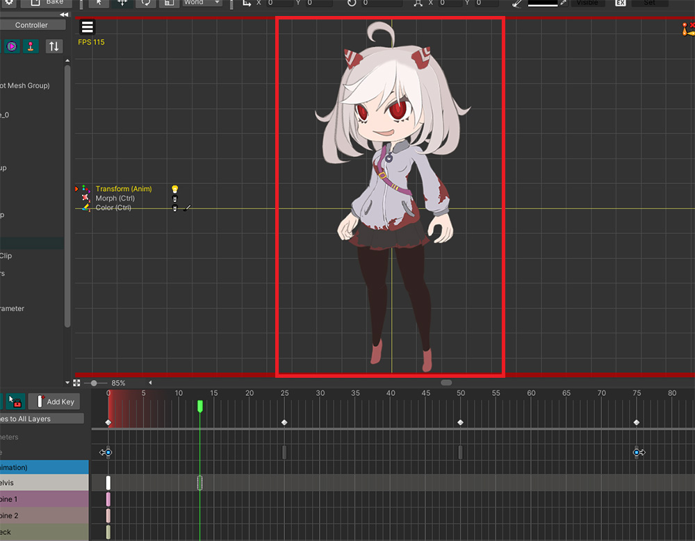
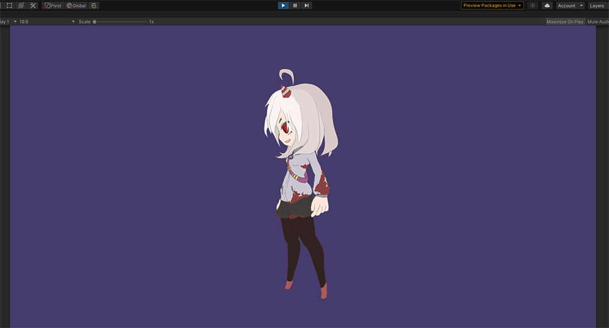

AnyPortrait > マニュアル > 複数方向の姿を持つキャラクターを作
複数方向の姿を持つキャラクターを作
1.3.4
ゲームに登場するキャラクターを作るとき、ゲームの特性によって「前面」、「側面」、「背面」が見えるように作らなければならない場合があります。
これはトップビューのゲームだけでなく、サイドビューのアクションゲームでもよく使われます。
このページでは、AnyPortraitを使用してさまざまな方向の外観を持つキャラクターを作成する方法について説明します。
このページでは機能中心で説明し、アニメーションを作成する細かいプロセスや画像を制作する方法は扱いませんので参考にしてください。
複数方向の姿を持つキャラクターを作る方法には大きく二つの方法があります。
最初の方法は、「複数のルートユニット」を作成してスクリプトに外観を切り替える方法です。
別の方法は、「複数の子メッシュグループを持つ 1 つのルートユニット」を作成して制御パラメータに変更する方法です。
それぞれ長所と短所を持っているので、以下の説明からあなたに合った方法を選んでください。
PSDファイルのインポートに関するヒント
本格的な説明に先立ち、子メッシュグループを直接作成したり、複数のルートユニットを作成するためにPSDファイルを作成してインポートする方法について説明します。
この方法を事前に知っておくと、PSDイメージを準備してメッシュグループを整理するのに役立ちます。
準備したPSDファイルです。
詳しく見ると、2つの画像レイヤーが1つのグループにまとめられていることがわかります。
レイヤーをグループにまとめてAnyPortraitにインポートすると、そのグループは「子メッシュグループ」に変換されます。

準備したPSDファイルをAnyPortraitにインポートしましょう。
(1) 「Import PSD File」ボタンを押してPSDファイルを開きます。
(2) PSDファイルのグループが認識されていることがわかります。

PSDファイルのインポート作業を完了してみましょう。
上記のようにPSDファイルと同じように構成されています。
(1) 2つの「子メッシュグループ」が作成され、1つの「ルートメッシュグループ」に属しています。
(2) ルートメッシュグループを選択すると、PSDファイルと同様に、メッシュと子メッシュグループが作成および配置されていることがわかります。

(1) 子メッシュグループを選択してみると、(2) ここに属するメッシュのみを別々に確認して編集できます。
この機能を使用すると、単一のPSDファイルを使用して「複数の方向の外観を持つキャラクター」をすばやく簡単に整理できます。
構成を変更したい場合は、次の説明を確認してください。

ルートメッシュグループから子メッシュグループを削除しましょう。
(1) 削除したい子メッシュグループを選択します。
(2) 「Detach」ボタンを押します。
(3) 案内メッセージの「Detach」ボタンを押します。
子メッシュグループが削除されたことがわかります。
今度は逆に子メッシュグループを追加しましょう。
(1) 「+」ボタンを押します。
(2) 「Mesh Group」タブを押します。
(3) 追加したいメッシュグループを選択し、 (4) 「Add」ボタンを押します。

メッシュグループが「子メッシュグループ」として登録されました。
ただし、この場合はメッシュグループが原点に配置されます。

(1) 「Edit Default Transform」モードをオンにし、 (2) 直接位置を変更する必要があります。
方法1.複数のルートユニットを使用する
複数の方向を持つキャラクターを作成する最初の方法は、それぞれの方向に沿ったルートユニットを作成することです。
アニメーションの途中で方向を切り替えるなどの複雑なアニメーションを作成しない場合、この方法はかなり直感的でスクリプトで扱いやすいです。

作成したメッシュグループとルートユニットは、上記のように「Front」、「Side」、「Back」です。
各メッシュグループは互いに独立しています。

ルートユニットとなる各メッシュグループは、ボーンと「Riggingモディファイア」、「Transform（Animation）モディファイア」を持っています。

それぞれの方向のアニメーションを作成します。
(1) 「Front」のアニメーションである「Walk_Front」を作成します。
(2) アニメーションを「Front」メッシュグループにリンクします。
(3) 「Front」メッシュグループのアニメーションを作成します。
同じように「Side」、「Back」のアニメーションを作成します。
それでは、簡単なスクリプトを作成してキャラクターの向きを変えるようにしましょう。
using UnityEngine;
using AnyPortrait;
public class MultiRootUnitController : MonoBehaviour
{
// 対象キャラクター
public apPortrait portrait;
void Start() { }
void Update()
{
if(Input.GetKeyDown(KeyCode.Alpha1))
{
// 数字1キーを押すと、「Front」のウォーキングアニメーションが再生されます。
portrait.Play("Walk_Front");
}
if(Input.GetKeyDown(KeyCode.Alpha2))
{
// 数字2キーを押すと、「Side」のウォーキングアニメーションが再生されます。
portrait.Play("Walk_Side");
}
if(Input.GetKeyDown(KeyCode.Alpha3))
{
// 数字3キーを押すと、「Back」のウォーキングアニメーションが再生されます。
portrait.Play("Walk_Back");
}
}
}
スクリプトを見ると、ルートユニットを切り替える別のコードはなく、単にアニメーションを再生するコードしかありません。
アニメーションによってルートユニットが切り替わるので、コードを本当に簡単に書くことができます。

作成したキャラクターと作成したスクリプトをUnityシーンに配置しましょう。
(1) AnyPortraitエディタで「Bake」をすると、キャラクターがシーンに配置されます。
(2) 新しい「GameObject」を作成します。
(3) 生成された 「GameObject」に先に作成したスクリプトを追加し、「apPortrait」を割り当てます。

ゲームを実行してスクリプトで作成したように、数字1、2、3を押すと、対応するルートユニットに切り替えてアニメーションが実行されます。
複数のルートユニットを使用することは、従来の制作方式では大きく変わらず、キャラクターの向きに合ったアニメーションを再生するようにスクリプトで作成すればよい。
ワークフローとスクリプトの作成が簡単で直感的であることは、このアプローチの利点です。
一方、方向が切り替わるアニメーションを作成するのは難しいという欠点です。
方向を切り替えるアニメーションを作成したい場合は、各方向のアニメーションを作成して順番に再生するスクリプトを作成する必要があります。
したがって、このアプローチは「トップビュー（Top-View）」のゲームで効果的に使用できます。
方法2.複数の子メッシュグループを使用する
2番目の方法は、「1つのルートユニットとなるメッシュグループ」に「複数の子メッシュグループ」を追加する方法です。
レンダリングする必要がある子メッシュグループのみを表示し、残りのメッシュグループを非表示にして、キャラクターの向きを変えることができます。
(1) 前の説明と同じキャラクターのように見えますが、1つのメッシュグループに3つのメッシュグループが子メッシュグループとして登録されています。
(2) 各メッシュグループは独立してメッシュとボーンを持っており、「Rigging Modifier」が適用されています。

親子メッシュグループを使用して作業する場合は、どのメッシュグループにどのモディファイアを追加するかを決定する必要があります。
子メッシュグループがそれぞれボーンを持ちながら独立した動きを持つ場合は、特に注意が必要です。
私たちは上記のようにモディファイアを設定することをお勧めします。
タスクの利便性、一貫性、パフォーマンスの両方を考慮する場合は、「ルートメッシュグループ」に「Morph、Transform、Color Onlyモディファイア」を追加することをお勧めします。
特に、「Animationモディファイア」はルートメッシュグループにのみ追加できます。
（誤って「Animationモディファイア」を子メッシュグループに追加してアニメーションを作成した場合は、関連ページの解決方法を参照してください。）
「Rigging, Physics モディファイア」は外部データ (制御パラメータ、アニメーション) に関係なく動作するため、ボーンやメッシュを持つ 「子メッシュグループ」に追加する方が便利です。
特に、子メッシュグループにボーンがある場合は、「Riggingモディファイア」を子メッシュグループに追加するのが便利です。
ただし、対象メッシュに2つ以上の「Riggingモディファイア」が適用される場合、問題が発生しますのでご注意ください。
この点に注意して設定してください。
親メッシュグループにこれらのモディファイアを追加して適用しても構いません。
「Controllerモディファイア」（Morph、Transform、Color Only）を子メッシュグループに追加することは可能ですが、私たちはお勧めしません。
親子メッシュグループにモディファイアを複合的に登録したが、意図しないキャラクターの動きに苦しむ方々からのフィードバックを多く受けました。
したがって、可能であれば、外部データによるバリエーションはルートメッシュグループで一貫して編集することをお勧めします。

この方法で最も重要なポイントは、「制御パラメータを使用して表示される子メッシュグループを切り替えること」です。
これは、前の最初の方法でアニメーションを実行してルートユニットを切り替えることに対応します。
(1) 新しい「制御パラメータ」を追加します。 ここでは、「Root Pose」という名前の「制御パラメータ」を作成しました。
(2) 制御パラメータの種類を「Int」に設定します。
(3) 値の範囲を「-1～1」に設定したが、これはそれぞれ「Back : -1, Side : 0, Front : 1」にマッピングするためである。

(1) ルートメッシュグループを選択します。
(2) 「Modifier」タブを選択し、「Add Modifier」ボタンを押します。
(3) 「Color Only（Controller）」モディファイアを選び、 (4) 「Select」ボタンを押す。

(1) 制御パラメータに3つの「キー（Key）」を登録します。
(2) 子メッシュグループをモディファイアに登録します。
制御パラメータに従って表示される子メッシュグループを変更します。
値が「-1」の場合は「Back」が表示され、「0」の場合は「Side」、「1」の場合は「Front」のみが表示されます。
これで「Root Pose」制御パラメータの値によってキャラクターの向きが変わるようになりました。
もしキャラクターの方向が変換される過程の様子を表現したい場合は、以下のように設定してください。
- 「制御パラメータ」のタイプを「Int」ではなく「Float」に設定します。
- 「Color Onlyモディファイア」を使用する代わりに「Morphモディファイア」を使用し、「Color Option」と「Toggle Visibility without blending」を有効にします。 （関連ページ）
- 制御パラメータにキーを追加し、頂点を編集して中間の外観を作成します。
続くプロセスを説明する前に、複数の子メッシュグループを使用する場合は、次の機能の説明を最初に確認してください。
別のモディファイアを編集するときに子メッシュグループが切り替えられない場合
「編集モード」をオンにすると、デフォルトでは他のモディファイアや他の制御パラメータは機能しません。
そのため、このページで作成した「Root Pose制御パラメータで表示される子メッシュグループを切り替える」が動作しなくなります。
右の「Hierarchy UI」の「緑色の目のアイコン」を押して強制的に見せることができますが、これは一時的な方法なので、作業はまだ面倒です。
2つの方法でこの問題を解決しましょう。

説明のために別の「Morphモディファイア」を追加してみましょう。
上記のように新しい「制御パラメータ」と「Morphモディファイア」を追加しました。

「Morphモディファイア」を利用してキャラクターの角の長さを変更してみました。
まず、「Front」メッシュグループの「角」メッシュを変形しました。
「Front」のメッシュを変形したので、「Side」のメッシュを変形しようとしています。
(1) 表示される子メッシュグループを「Side」に置き換えるために「Root Pose」制御パラメータの値を変更しました。
(2) しかし、子メッシュグループには「Front」が表示され続けており、他の方向のメッシュを編集することは困難です。

(1) 「表示メニュー > Edit Mode Option > Apply Multiple Modifiers if no conflict」をオンにします。 （ショートカット： D ）
これで、編集モードでも他のモディファイアが動作するようになり、「Root Pose」の制御パラメータによって「Side」、「Back」が見えるようになります。
（編集モードオプションの詳細については、関連ページを参照してください。）

または、「可視性プリセット」（関連ページ）を使用して、子メッシュグループを強制的に切り替えることもできます。
「表示メニュー > Visibility Preset > Settings」で、可視性プリセット設定画面を開きます。
(1) 新しいルールを作成します。
(2) 「Custom」方式で設定し、必要に応じてショートカットキーを指定します。
(3) ルートメッシュグループを選択します。
(4) このルールが適用されると、「Front」メッシュグループのみが表示されるので、「Front」メッシュグループを強制的に表示するように設定します。
(5) 逆に、「Side」と「Back」のメッシュグループは強制的に非表示になります。
同じ方法でルールを追加して、各ルールによって「Front」、「Side」、「Back」が表示されるようにします。

「表示メニュー > Visibility Preset > Enable Preset」を有効にし（ショートカット： I ）、必要なルールを選択すると、対応するメッシュグループのみを表示するように作成できます。
ルールに設定されたショートカットを使用すると、作業速度を上げることができます。

ボーンアニメを作ろう
(1) ルートメッシュグループを選択し、「Modifier」タブの「Add Modifier」ボタンを押します。
(2) 「Transform (Animation)」 モディファイアを選択し、 (3) 「Select」 ボタンを押します。
(1) 新しいアニメーションを追加します。
(2) アニメーションに名前を付けた後、「Select Mesh Group」ボタンを押します。
(3) メッシュグループが表示され、子メッシュグループは選択できないことがわかります。 ルートメッシュグループを選択します。
(4) 「Select」ボタンを押します。

(1) 「Add Timeline」ボタンを押します。
(2) 子メッシュグループを切り替えるには、「Control Parameters」タイムラインを最初に追加します。

(1) 追加した「Control Parameters」タイムラインを選択します。
(2) 前に作成した「Root Pose」制御パラメータを選択します。
(3) 「Add Timeline Layer to Edit」ボタンを押してタイムラインにコントロールパラメータを登録します。

(1) もう一度「Add Timeline」ボタンを押します。
(2) ボーンアニメーションを作成するには、「Modifier: Transform (Animation)」を選択して追加します。
(1) 追加した「Transform（Animation）」タイムラインを選択します。
(2) 「Bones」タブを選択します。
(3) 「All Bones to Layers」ボタンを押します。
(4) 案内メッセージの「Okay」ボタンを押して、すべてのボーンをタイムラインに登録します。

それではアニメーションを作りましょう。
ボーンアニメーションを作成する前に、表示される子メッシュグループ、つまりキャラクターの方向をまずキーフレームに設定してみましょう。
（作業者のスタイルによっては、このページの説明とは異なり、メッシュグループのレンダリングとボーンアニメーションを同時に編集することもできます。）
(1) アニメーション「編集モード」をオンにし、「Control Parameters」タイムラインの「Root Pose」を選択します。
(2) キーフレームを追加します。

(1) キーフレームを選択し、 (2) 制御パラメータの値を指定します。
(3) 上記のように「Front > Side > Back > Side」が繰り返し表示されるようにキーフレームを設定しました。
(4) アニメーションを再生すると、ワークスペースの「Root Pose」の値に応じてキャラクターの向きが切り替わることがわかります。

その後、ボーンアニメーションを作成します。
(1) 「Transform (Animation)」タイムラインを選択し、「編集モード」をオンにします。
(2) ところで、この状態では「Root Pose」制御パラメータが適用されないため、ワークスペースにすべてのメッシュグループが表示されるという問題が発生します。

このページの前述の方法でこの問題を解決します。
(1) 「表示メニュー > Edit Mode Options > Apply Multiple Modifiers if no conflict」 (ショートカット: D ) を有効にします。

編集対象ではなくタイムラインも機能し、現在の状態に合った子メッシュグループのみがワークスペースに表示されます。

ボーンがワークスペースに見えないように設定した状態でした。
「 B 」キーを押すか、「表示メニュー > Show Bones」をオンにしてボーンが見えるようにしましょう。
ところで、見られる子メッシュグループとは別に、すべてのボーンが見えます。
あまりにも多くのボーンが乱雑にワークスペースに表示されるため、編集するのは困難です。
「可視性プリセット（Visibility Preset）」を使ってみましょう。
(1) 「表示メニュー > Visibility Preset > Settings」を選択します。

(1) 新しいルールを追加します。
(2) このルールの方式を「Show Bones If Mesh Group Visible」に設定します。
このオプションは、ボーンが属するメッシュグループがレンダリングされた場合にのみ、ボーンがワークスペースにレンダリングされるようにします。
生成されたルールを適用します。
(1) 「表示メニュー > Visible Preset」で作成したルールを選択し、 (2) 「Enable Preset」を押して有効にします。 （ショートカット： I ）
(3) アニメーションを再生すると、表示される子メッシュグループのボーンだけがワークスペースに表示されます。

すべての準備が終わったら、ボーンアニメーションを作る番です。
アニメーションクリップ内で、キャラクターが方向を変えながら移動するようにモーションを作成できます。
このプロセスはモーションによって、そしてあなたがアニメーションをどのように作るかによってプロセスに違いがあります。
次のワークフローを参考にモーションを作成してください。

(1) Transform タイムラインおよびタイムラインレイヤーを選択してキーフレームを生成した後、 (2) キャラクターのポーズを修正します。

(1) キャラクターの方向が変わる直前にキーフレームを生成します。
(2) キャラクターのポーズをつなぐ次の方向のポーズに似ているように修正します。

次のフレームに移動してキャラクターの向きが変わったとき、前のフレームとポーズの差が少ないほどアニメーションは自然になります。
前のキャラクター方向の最後のキーフレームと次の方向の最初のキーフレームの位置が同じになると、より自然な方向転換になります。
ボーンアニメーションと制御パラメータを組み合わせてキャラクターが回転するようなアニメーションを上記のように簡単に作ってみました。
より多くのキーフレーム、Morphモディファイア、回転に適したキャラクターイメージなどが保たれれば、はるかに高いクオリティの作品を作ることができるでしょう。
キャラクターの向きが自然に切り替わるように制御パラメータとポーズを設定するには多くのノウハウが必要です。
機能についての私たちの説明に加えて、アニメーションを直接作ってみながら、多くの経験を積んで素敵な作品を作ってみてください。

完成したキャラクターアニメーションをUnityシーンに確認しましょう。
(1) ルートユニットを選択した画面でアニメーションクリップを選択し、「Auto Play」を有効にして自動的にアニメーションを再生します。
(2) 「Bake」を実行します。

完成したアニメーションがUnityシーンで再生されるのを見ることができます。
複数の子メッシュグループを使用する方法は、説明に示すように、多数のオブジェクトを同時に編集する必要があります。
作業が少し難しく、設定する必要があるものが多いのは必然的な欠点です。
しかし、このような困難を乗り越えれば、1つのアニメーション内でキャラクターの向きが変わることを表現できるという大きな利点を得ることができます。
「サイドビュー（Side-View）」のアクションゲームでキャラクターが走り、戦い、ジャンプして振り返るなどの複合的なモーションを作るのに適した技法です。
現在表示されている子メッシュグループを確認
ゲームでキャラクターの向きが変わると、装着されたアイテムのイメージを変更するなどの処理が必要になることがあります。
この場合に必要な設定とスクリプトの例を説明します。
このページでキャラクターの向きを変える制御パラメータである「Root Pose」の値をリアルタイムで確認するスクリプトを作成しましょう。
using UnityEngine;
using AnyPortrait;
public class GetRootPoseScript : MonoBehaviour
{
public apPortrait portrait;
// Root Pose 制御パラメータ変数
private apControlParam rootPose;
// GUIで確認する現在のキャラクター方向の名前
private string poseName = "";
void Start()
{
// 「Root Pose」制御パラメータを取得し、変数として保存します。
rootPose = portrait.GetControlParam("Root Pose");
}
// 値を確認するのは、Updateではなく「LateUpdate」でなければなりません。
void LateUpdate()
{
// 現在の制御パラメータの値を確認します。 Root PoseがInt型だったので、「Int」値を取得します。
int currentPose = rootPose.IntValue;
// 制御パラメータの値に割り当てられたキャラクターの方向を文字列として格納します。
switch (currentPose)
{
case -1: poseName = "Back"; break;
case 0: poseName = "Side"; break;
case 1: poseName = "Front"; break;
}
}
private void OnGUI()
{
// 文字列として保存されたキャラクターの方向を Unity 画面に出力します。
GUI.Label(new Rect(10, 10, 500, 20), "Current Pose : " + poseName);
}
}
上記のスクリプトを見ると、「Update」ではなく「LateUpdate」で制御パラメータの値を確認することがわかります。
AnyPortraitのアップデートは、「Update」ではなく「LateUpdate」で動作するためです。
これは、他のスクリプトの処理が完了した後に動作するように設計されているためです。
（Unityのアニメーションシステムがスクリプトより後で動作するのと同じ理由です。）
したがって、逆に AnyPortrait の更新直後の値を確認するには、「LateUpdate 」でコードが動作するように書く必要があります。
(1) Unityシーンに戻り、新しい「GameObject」を作成します。
(2) スクリプトを追加し、キャラクターを「apPortrait変数」に割り当てます。

さらに設定する必要があるプロセスがあります。
「LateUpdate」でコードが実行されても、「スクリプト呼び出しの順序」によって、AnyPortraitのアップデートよりもスクリプトが最初に動作することがあります。
そのため、AnyPortrait のアップデートより遅く実行されるように、「スクリプト呼び出し順序」も変更する必要があります。
（これに関しては、関連ページでも確認できます。)
(1) Unity の設定中に 「Project Settings > Script Execution Order」を選択します。
(2) 作成したスクリプトを追加し、「Default Time」より後に実行されるように順序を変更します。
(3) 「Apply」ボタンを押します。

ゲームを実行すると、キャラクターの向きをスクリプトが認識して画面に出力するのがわかります。